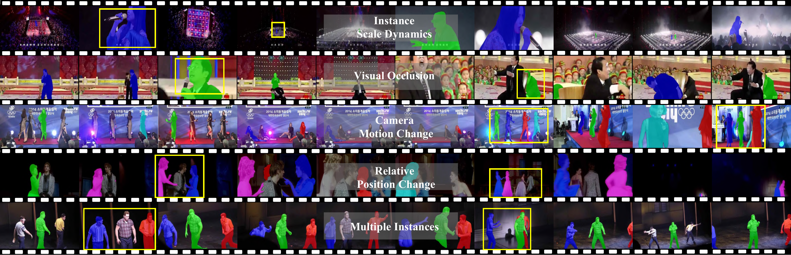
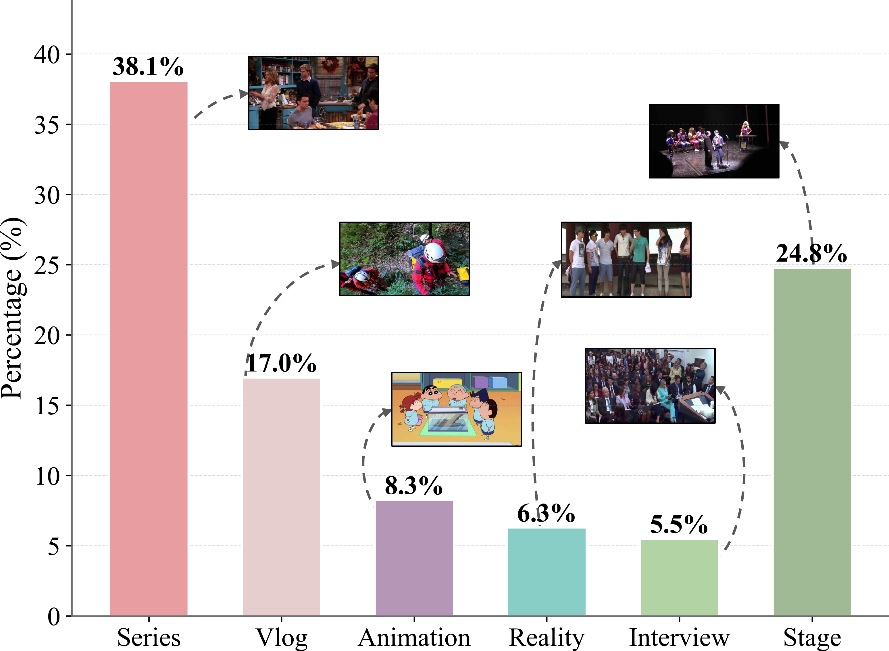
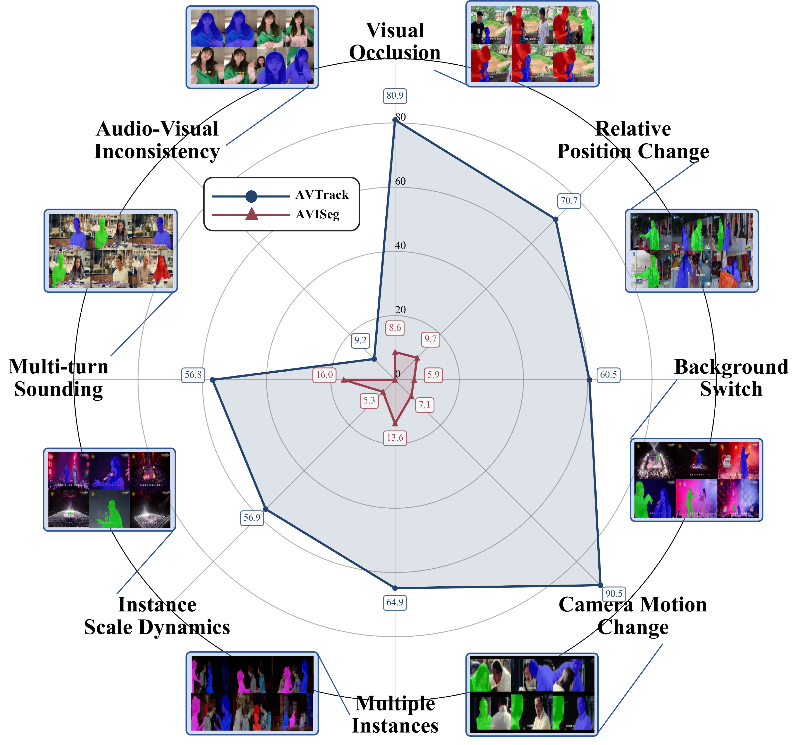
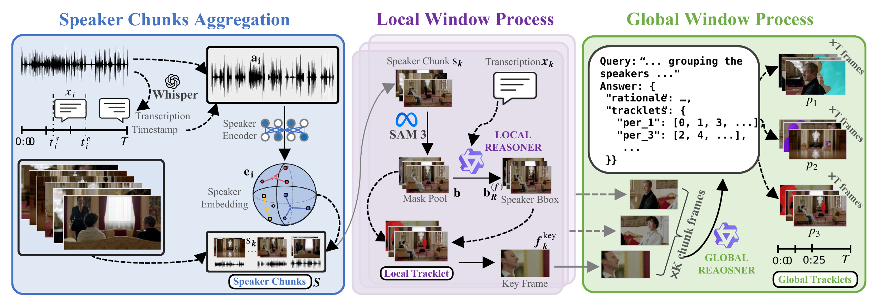

Updates
- 2026-05 AVTrack code, dataset, and project page released.
- 2026-05 AVTrack is accepted to ICML 2026. 🎉

AVTrack benchmarks audio-visual person tracking under dynamic conditions — camera motion, occlusion, scale and position changes — where existing methods degrade substantially.
What is the task?
Audio-Visual Instance Segmentation for Human Speakers (Human-centric AVIS) asks a model to identify and continuously segment each speaking person in a video, frame by frame, by jointly reasoning over what is seen and what is heard. Unlike active-speaker detection or audio-visual localization, the output is a temporally consistent mask track per speaker — meaning the model must answer three questions at once:
- Who is speaking? Use audio to identify the active speakers and their boundaries in time.
- Where are they? Use vision to segment each speaker at pixel precision in every frame.
- Are they the same person? Maintain identity across frames despite occlusion, motion, and viewpoint changes.
This makes the task a stress test for fine-grained cross-modal reasoning under realistic, dynamic conditions.
What is AVTrack?
AVTrack is a human-centric audio-visual instance segmentation dataset built specifically for evaluation in dynamic, real-world scenes. It complements existing AVIS benchmarks — which often rely on static, single-speaker, or laboratory-style footage — with the kind of messy conditions that real applications actually see.
- 871 videos, 100% test split, averaging 54 s per clip.
- Pixel-level instance masks with cross-frame identity (tracking), plus aligned audio.
- Spans interviews, films, anime, operas, narrations, and stage performances — broad coverage of speakers, languages, and acoustic conditions.
- Per-video challenge attributes: camera motion, occlusion, position changes, overlapping speech, and more.
- Released with a training-free baseline (AVTracker) to bootstrap future research.
Abstract
Audio-visual speaker tracking aims to localize and track active speakers by leveraging auditory and visual cues, enabling fine-grained, human-centric scene understanding. This capability is essential for real-world applications such as intelligent video editing, surveillance, and human–computer interaction. However, existing datasets are largely limited to simple or homogeneous audio-visual scenes with coarse annotations. Such oversimplified settings bias evaluation toward static audio–visual co-occurrence, rather than rigorously assessing robust spatiotemporal modeling and cross-modal reasoning in complex, dynamic scenes.
To address these limitations, we introduce AVTrack, a human-centric audio-visual instance segmentation (AVIS) dataset designed for dynamic real-world scenarios. AVTrack features diverse and challenging conditions, including camera motion, visual occlusions, and position changes. Evaluations of representative AVIS methods on AVTrack reveal substantial performance degradation, establishing AVTrack as a challenging benchmark for robust human-centric audio-visual scene understanding in complex environments. We further provide a simple yet effective baseline to facilitate future research.
Dataset Sources
AVTrack is curated from a broad range of human-centric video sources spanning interviews, films, anime, operas, narrations, and stage performances, providing rich diversity in identity, language, motion, and acoustic conditions.

Comparison with Existing Datasets
Comparison of non-laboratory datasets for audio-visual and visual-only tasks. Only VIS and AVIS provide instance-level annotations. AVTrack is the only one designed specifically for human-centric AVIS evaluation in dynamic real-world scenes.
| Task | Dataset | Videos | Test (%) | Length | Domain | Anno. | Audio | Track | Publication |
|---|---|---|---|---|---|---|---|---|---|
| ASD | AVA-ActiveSpeaker | 262 | 41.6 | 529.0 s | Human | bbox | ✓ | ✗ | ICASSP '20 |
| AVL | VGG-SS | 5,158 | 100.0 | 10.0 s | Common | bbox | ✓ | ✗ | CVPR '21 |
| AVOS | AVSBench-O | 5,356 | 15.0 | 5.0 s | Common | mask | ✓ | ✗ | ECCV '22 |
| AVSS | AVSBench-S | 12,356 | 20.7 | 7.8 s | Common | mask | ✓ | ✗ | IJCV '25 |
| Ref-AVS | RefAVS-Bench | 4,002 | 20.4 | 10.0 s | Common | mask | ✓ | ✗ | ECCV '24 |
| Ref-VOS | J-HMDB Sentences | 928 | 100.0 | 1.0 s | Human | mask | ✗ | ✗ | CVPR '18 |
| VIS | YouTube-VIS | 2,883 | 11.9 | 4.6 s | Common | mask | ✗ | ✓ | ICCV '19 |
| OVIS | 901 | 17.1 | 12.8 s | Common | mask | ✗ | ✓ | IJCV '22 | |
| YouMVOS | 200 | 15.0 | 333.1 s | Human | mask | ✗ | ✓ | CVPR '22 | |
| AVIS | AVISeg | 926 | 22.1 | 61.4 s | Common | mask | ✓ | ✓ | CVPR '25 |
| AVTrack (ours) | 871 | 100.0 | 54.0 s | Human | mask | ✓ | ✓ | ICML '26 | |
Test: proportion of test split. Length: average video duration. Anno.: annotation granularity. Audio: whether audio is provided. Track: whether cross-frame instance identity is available.
Challenge Categories
Each video is annotated with fine-grained challenge attributes. AVTrack exposes models to systematic stress tests — camera motion, occlusion, position changes, overlapping speech, and more — that conventional AVIS benchmarks rarely cover.

AVTracker: A Simple Baseline Workflow
Alongside the dataset, we release AVTracker, a training-free baseline workflow that chains speech recognition, visual instance tracking, and a vision–language model into a four-stage pipeline. AVTracker operates on speech-boundary windows and uses VLM reasoning for both local speaker–instance grounding and global identity association, with optional speech separation for overlapping audio.

Team
Institute of Big Data, College of Computer Science and Artificial Intelligence, Fudan University, Shanghai, China.


BibTeX
@inproceedings{wang2026avtrack,
title = {{AVTrack}: Audio-Visual Tracking in Human-centric Complex Scenes},
author = {Wang, Yaoting and Zhou, Yun and Zhang, Zipei and Ding, Henghui},
booktitle = {International Conference on Machine Learning (ICML)},
year = {2026}
}